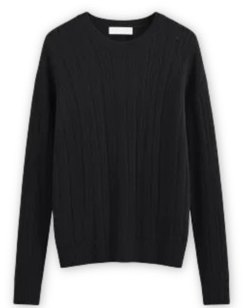
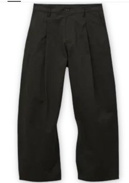
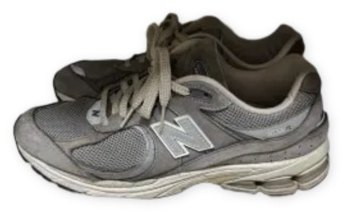
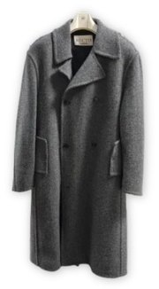
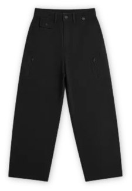

추천
TONYWACK 블랙 케이블 니트 + RECTO 블랙 발마칸 코트
블랙과 차콜만 쓴 무채색 출근 코디예요. 올블랙으로 맞추기보다 바지를 차콜로 한 톤 풀고, 케이블 니트의 짜임으로 질감 차이를 줘서 밋밋하지 않게 했어요. 두꺼운 케이블 니트에 긴 발마칸 코트라 영하 5° 아침 출근길에도 든든해요.

코트RECTO 블랙 발마칸 코트RECTO 블랙 발마칸 코트예요. 품이 넉넉해 두꺼운 니트 위에도 편하게 걸쳐져요.

니트TONYWACK 블랙 케이블 니트TONYWACK 블랙 케이블 니트예요. 도톰해서 코트 안에 이것 하나로 충분해요.

정장바지어나더 오피스 차콜 투턱 정장바지어나더 오피스 차콜 투턱 정장바지로 블랙 사이에 한 톤 밝은 면을 만들어요.

부츠ROMANTIC MOVE 블랙 첼시 부츠ROMANTIC MOVE 블랙 첼시 부츠예요. 발목까지 덮여 영하 날씨에 로퍼보다 따뜻해요.

크로스백생로랑 블랙 나일론 크로스백생로랑 블랙 나일론 크로스백이에요.

대안
POTTERY 차콜 폴로 니트 + 퍼스트플로어 그레이 싱글 코트
그레이와 차콜 무채색 위에 다크브라운 바지 하나만 색으로 쓴 코디예요. 카라가 있는 폴로 니트라 셔츠 없이도 단정하고, 근무복으로 갈아입기도 편해요.

코트퍼스트플로어 그레이 싱글 코트퍼스트플로어 그레이 싱글 코트예요. 이 코디에서 가장 밝은 색이에요.

니트POTTERY 차콜 폴로 니트POTTERY 차콜 폴로 니트예요. 카라 덕분에 코트 안에서 깔끔하게 정리돼요.

정장바지쿠어 다크브라운 투턱 정장바지쿠어 다크브라운 투턱 정장바지예요. 이 코디의 유일한 색이고, 그레이 코트와 잘 어울려요.

로퍼로스트가든 블랙 레더 로퍼로스트가든 블랙 레더 로퍼예요. 병원 신발장에도 잘 들어가요.

숄더백르메르 블랙 호보 숄더백르메르 블랙 호보 숄더백이에요.

대안
더니트컴퍼니 라이트그레이 니트 + TIME HOMME 블랙 숏 패딩
코트 대신 패딩을 입는 가장 따뜻한 버전이에요. 블랙 패딩과 블랙 바지 사이에 라이트그레이 니트와 그레이 스니커즈를 넣어 올블랙의 답답함을 덜었어요.

패딩TIME HOMME 블랙 숏 패딩TIME HOMME 블랙 숏 패딩이에요. 광택이 적어 정장바지와도 어울려요.

니트더니트컴퍼니 라이트그레이 니트더니트컴퍼니 라이트그레이 니트예요. 블랙 사이에서 얼굴 쪽을 밝혀줘요.

정장바지SOLID HOMME 블랙 테이퍼드 정장바지SOLID HOMME 블랙 테이퍼드 정장바지예요. 숏 패딩과 비율이 깔끔해요.

스니커즈NEW BALANCE 그레이 스니커즈NEW BALANCE 그레이 스니커즈로 니트와 색을 이어요.

백팩YOUTH 블랙 백팩YOUTH 블랙 백팩이에요.

옷장 자동 조합
포터리 라이트블루 셔츠 + RECTO 그레이 헤링본 코트
같은 날씨와 격식 기준(무채색 위주, 포인트 컬러는 하나까지)으로 옷장에서 자동으로 고른 조합이에요.

셔츠포터리 라이트블루 셔츠

코트RECTO 그레이 헤링본 코트

청바지GLW 블랙 와이드 청바지

구두클락스 오리지널스 블랙 스웨이드 구두
크로스백생로랑 블랙 나일론 크로스백

옷장 자동 조합
ART IF ACTS 워시드 블랙 셔츠 + 쿠어 카멜 더블 코트
같은 날씨와 격식 기준(무채색 위주, 포인트 컬러는 하나까지)으로 옷장에서 자동으로 고른 조합이에요.

셔츠ART IF ACTS 워시드 블랙 셔츠

코트쿠어 카멜 더블 코트

카고바지siiido 블랙 카고바지

구두Loake 블랙 캡토 구두
숄더백르메르 블랙 호보 숄더백

옷장 자동 조합
POTTERY 화이트 셔츠 + IN SILENCE 블랙 싱글 코트
같은 날씨와 격식 기준(무채색 위주, 포인트 컬러는 하나까지)으로 옷장에서 자동으로 고른 조합이에요.

셔츠POTTERY 화이트 셔츠

코트IN SILENCE 블랙 싱글 코트

정장바지노이어 네이비 투턱 정장바지
구두Loake 블랙 캡토 구두
크로스백생로랑 블랙 나일론 크로스백